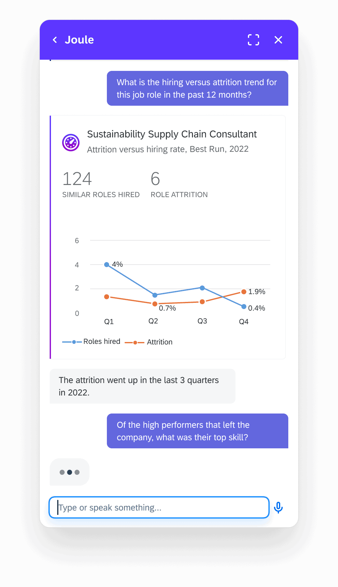

Leadership requested a Retry/Regenerate button for 440K+ enterprise users. Engineering was scoped. I pushed to run a behavioral study before anyone built anything. Every participant repaired AI errors conversationally without reaching for a reset control. The recommendation to deprioritize reached VP level without being pushed.
My Role
Sole researcher. Scoped the study, recruited participants, facilitated all 8 sessions, synthesized findings and drove readout to PM, Design and AI leads.
Retry feature deprioritized. Team redirected to conversational repair patterns. Findings escalated to VP unsolicited. A "Conversational vs. UI" framework adopted for future AI interface decisions.
The Problem
Joule is SAP's AI assistant, deployed to more than 440,000 enterprise users across finance, HR and supply chain. The interface is conversational by design: a prompt field, a response and no traditional UI chrome. When teams started fielding feedback that responses were sometimes wrong or incomplete, the proposed fix was a Retry or Regenerate button. ChatGPT had one. Microsoft Copilot had one. A VP had sponsored the request and engineering estimated a small lift.
The assumption behind the request: when an AI response misses, users want a transactional fix. One button, one reset, move on.
Problem 1: user reports an unhelpful response with no clear path to correctionProblem 2: leadership's proposed solution, a single-tap reset control
The proposed control at rest: a regenerate option surfaced in the Joule response menuThe proposed flow: tap regenerate, Joule resubmits without new context
Before building, I pushed to run a behavioral study. Not to confirm the button's design, but to check whether the assumption behind it was right.
Study design: four phases from competitive benchmark through output.
Why Behavioral Observation, Not a Survey
A survey asking "would you use a Retry button?" would have returned misleading signal. People reliably say yes to features when evaluated in isolation. I needed to observe natural error-repair behavior without priming participants toward any specific control. Think-aloud behavioral observation was the only method that could surface the actual mental model users hold when an AI response misses the mark.
Saturation
The goal wasn't to measure frequency. It was to find out whether the pattern existed at all. Nielsen's research shows 5–8 participants reliably surface recurring behavioral themes in focused task observation. By session 5, all observed users had repaired errors conversationally with zero button-seeking. Sessions 6–8 confirmed saturation. No new patterns. A larger n would have added confidence intervals to a frequency claim. It would not have changed the categorical finding. The appropriate next step is a quantitative phase to measure adoption of conversational repair at scale, not more behavioral interviews.
Behavioral pattern
S1
S2
S3
S4
S5
S6
S7
S8
Users rephrased prompt on error
●
●
●
●
●
●
●
●
No UI button-seeking observed
●
●
●
●
●
●
●
●
Retry/Regenerate distinction invisible
—
●
●
●
●
●
●
●
Transparency and steering desired
—
—
●
●
●
●
●
●
● First observed · ● Confirmed · — Not yet observed · S5 Saturation point
Key Findings
1
Users treated AI correction as collaborative dialogue, not mechanical repair
All 8 participants immediately rephrased their prompt when Joule missed the mark. None paused to look for a button or control. Users treated correction as an iterative conversation, not a transaction a reset could resolve.
2
The Retry vs. Regenerate distinction that mattered to engineers was invisible to users
Even when directly prompted to reflect on the difference, participants couldn't distinguish the two concepts during an active task. The label debate the team was having was solving a problem users didn't experience.
3
Users wanted transparency and steering controls, not a reset
Participants described wanting visibility into why a response changed, the ability to adjust tone and side-by-side comparisons. These match the conversational repair model they were already using naturally.
4
Participants who had used dedicated regenerate buttons elsewhere found them useless and stopped
Several participants had prior experience with regenerate controls in other AI tools. Without exception, they had stopped using them. The reason was consistent: the button resubmits without incorporating new information, so the output doesn't meaningfully change. This wasn't a Joule-specific finding. It was a behavioral pattern across AI assistants.
"
"I would say that 90% of the time it is useless."
Participant, on using the regenerate button in other AI tools
"If retry without new information, then the result is still no good."
"I don't know sometimes what exactly I'm looking for. I'm figuring out the journey along the way."

The interface studied: Joule's conversational input. Users sent follow-up prompts to repair AI errors rather than reaching for any reset control.
Competitive Benchmarking: ChatGPT and Microsoft Copilot
Both ChatGPT and Copilot have regenerate controls below every response. If the behavior I observed was caused by Joule's missing button, the benchmark would expose it. Users who had access to the button in another tool should be reaching for it there.
They weren't. Participants who used both tools regularly had tried the button, found the new response wasn't meaningfully different and stopped. By the time they were in a Joule session, conversational repair wasn't a workaround for a missing feature. It was the behavior they'd already settled on, across tools that had the button.
The benchmarking did two things. First, it ruled out the most defensible objection to the behavioral data: that the finding was a Joule-specific artifact. Second, it gave the team a second independent data source when making the case to leadership. A VP had sponsored the Retry request. One n=8 behavioral study is contestable. Two independent signals, neither requiring the other, are harder to dismiss.
Competitive benchmark: error recovery behavior across ChatGPT, Copilot and Joule. Users with access to the regenerate button in other tools had already stopped using it.
Cross-Functional Influence
The feature had been requested by a VP. I wasn't bringing unsolicited research to a blank slate. I was pushing back on a direction with real momentum. The burden of proof was higher than it would have been for a shape-the-feature study.
The framing
I led with the number, not the theme. "8/8 users repaired conversationally, zero reached for a control" is categorical. A qualitative theme about preferring conversation is contestable. One is harder to argue with.
The second signal
I brought in the competitive data. If someone wanted to argue the finding was a Joule-specific artifact, the benchmark cut that off. ChatGPT and Copilot both have the button. Users had it. They stopped using it. That's a second independent signal the study didn't require but the room did.
The forward path
"Don't build this" is a stop signal. Stop signals get argued with. I reframed the question: not "how should the button be labeled?" but "how should Joule support users who are already guiding it conversationally?" That gave the PM and design leads something to act on, not just a closed door.
The PM escalated the findings to the sponsoring VP after the readout without prompting from me. The feature was deprioritized at VP level. What came back was not a challenge to the data but a second ask: document the logic so the team could apply it without commissioning a new study each time.
Product Implication
That ask became the "Conversational vs. UI" framework: a decision tool mapping which conditions make conversational repair sufficient and which require a dedicated UI control. The Joule product team adopted it as a standing input for interface design reviews. The next two AI feature discussions used it before research was even scoped.
Conversational vs. UI Framework: screening tool mapping interaction type against repair complexity to determine whether an AI assistant needs a UI control or whether the conversation handles it.
Impact
Retry feature deprioritized before engineering beganTeam redirected to conversational repair designVP escalation (unsolicited)"Conversational vs. UI" framework adopted for AI decisions
Reflection
Follow the disconfirmation with a validation phase
The study was rigorous at disconfirming the Retry button. It was weaker at validating the alternatives. A second phase testing tone controls and response comparison UIs would have turned "don't build X" into "build Y instead," giving the team a concrete direction alongside the stop signal.
Plan the influence path before data collection, not after
The hardest moment in this project was presenting a stop signal to a room with a VP-sponsored direction already in motion. I built the triangulation and the reframe in response to that pressure rather than in advance of it. Scoping the influence question up front would have changed the study design: more deliberate triangulation, a quantitative follow-on planned before the readout and a recommendation artifact built for leadership from the start.